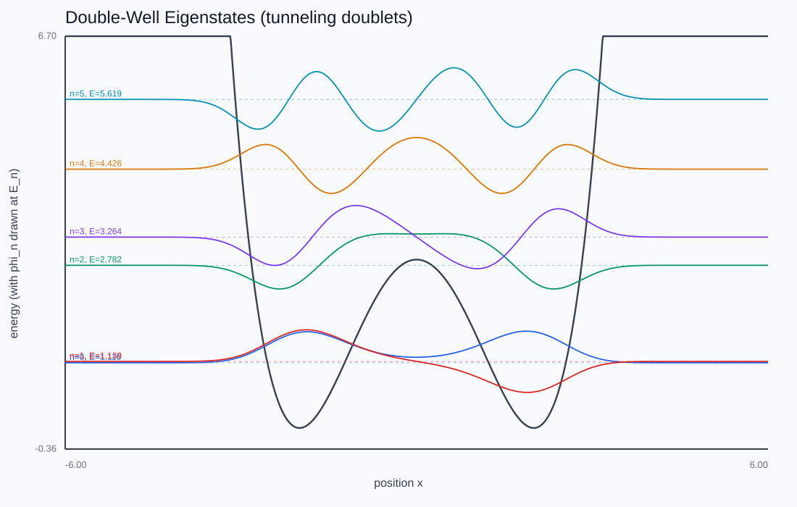
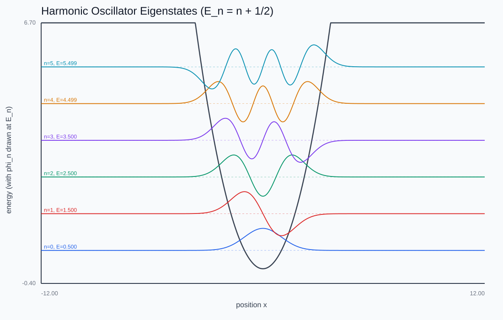
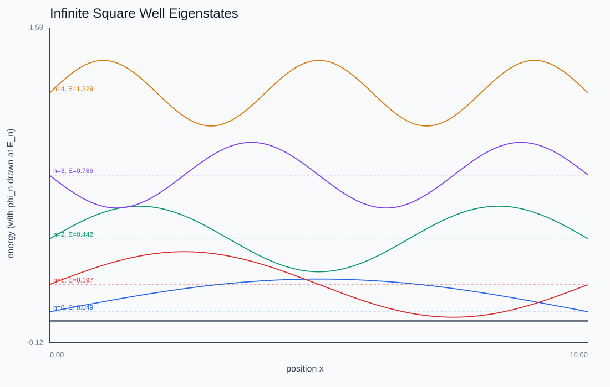
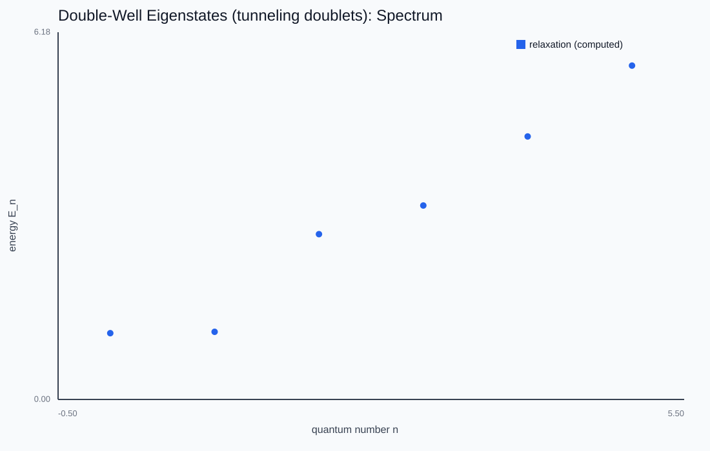

Quantum Eigenstates
How do you find the energy eigenstates that set spectral lines and bonding — without diagonalizing a giant matrix?
Imaginary-time relaxation finding the eigenstates live: a random guess decays onto the ground state. Hit "Next state" to project it out and climb the ladder. Try the double well and watch the tunneling doublet appear.

Rotate time into the imaginary axis
Substitute t = -iτ into the Schrödinger equation and it becomes a diffusion equation ∂ψ/∂τ = -Hψ. Every energy component decays as exp(-E_n τ), but the lowest decays slowest. Renormalize after each step and any starting state relaxes onto the ground state — no matrix diagonalization, just the same tridiagonal Hamiltonian from the previous lab.

Climbing the ladder
To get excited states, relax again while projecting out every already-converged lower state (Gram-Schmidt). The slowest-surviving component is then the next eigenstate. The states come out orthonormal by construction, checked to 1e-6.

Backward Euler, not Crank-Nicolson
CN's amplification factor tends to -1 for high-energy lattice modes, so the relaxation gets stuck on the spurious zigzag mode. Backward Euler's factor 1/(1+ΔτE) decreases monotonically with energy — high modes damped hardest — and the energy is read off as an exact Rayleigh quotient regardless of step accuracy. The double well's tunneling doublets are the payoff: the toy model behind molecular inversion lines and bonding pairs.

This chapter is drawn from the physics-lab study notes and renders. The longer write-ups and project essays live on the blog.